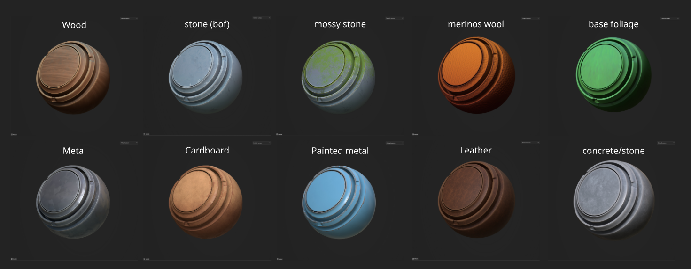
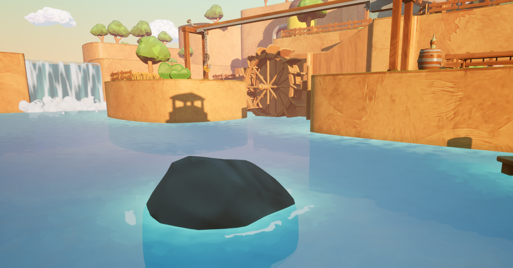
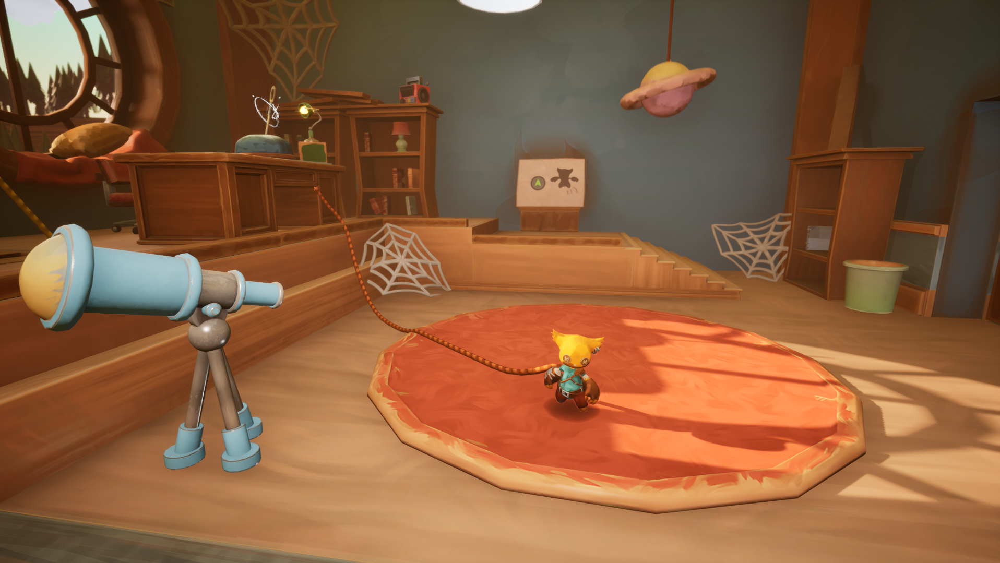
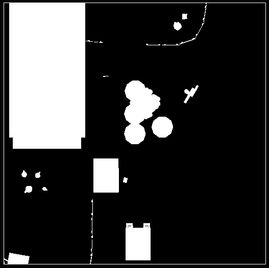
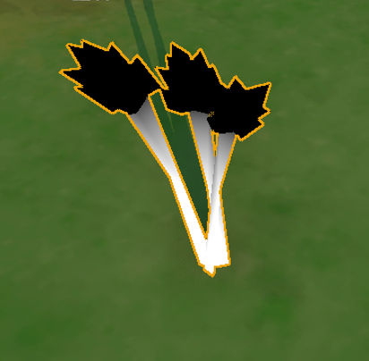
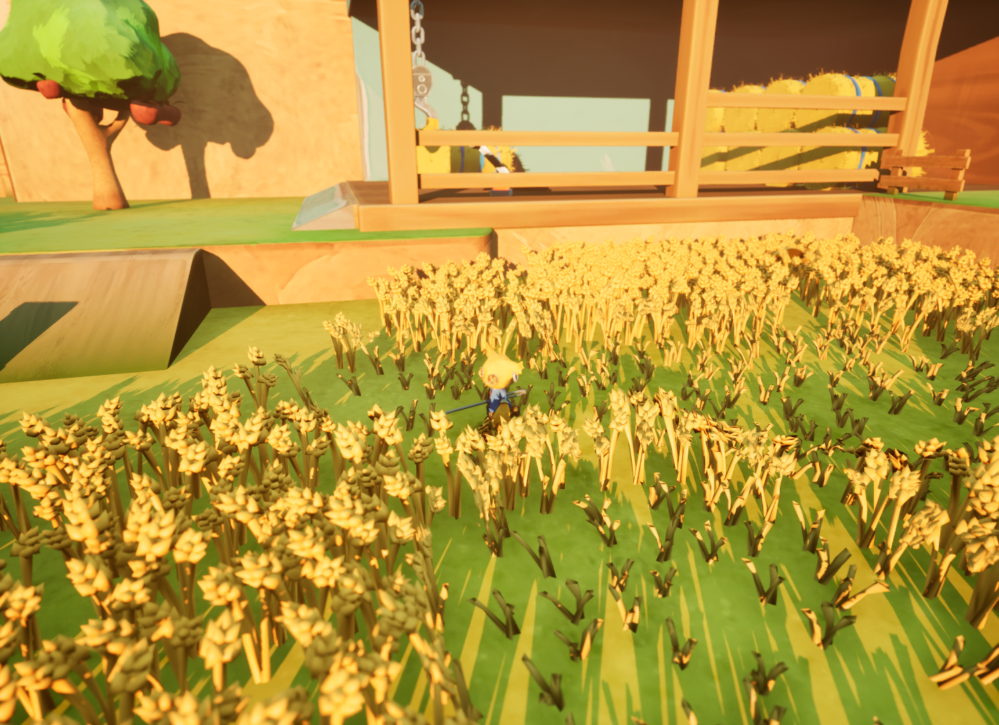
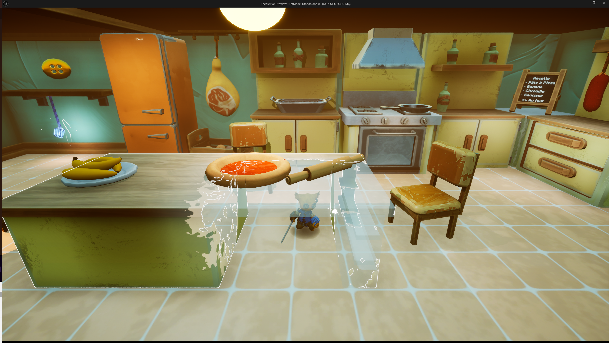
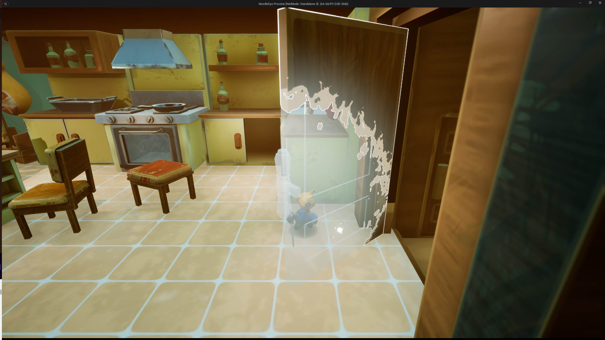
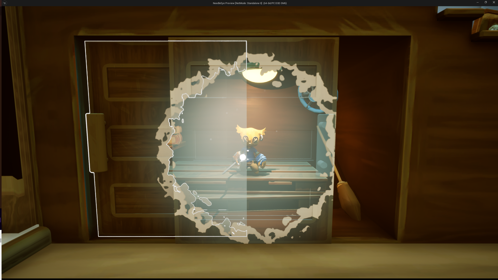

Needle Eye
A master's degree end of study work
Welcome to Needle Eye, a peaceful but aging hamlet sunk into boredom... at least until you arrived. In this cozy adventure game based on thread physics, bring this village back to life in chaotic fashion using your needle, which lets you link anything in the game : objects, environments, NPCs, creatures, even your own character. You can link everything together, and your only limit is your creativity !









